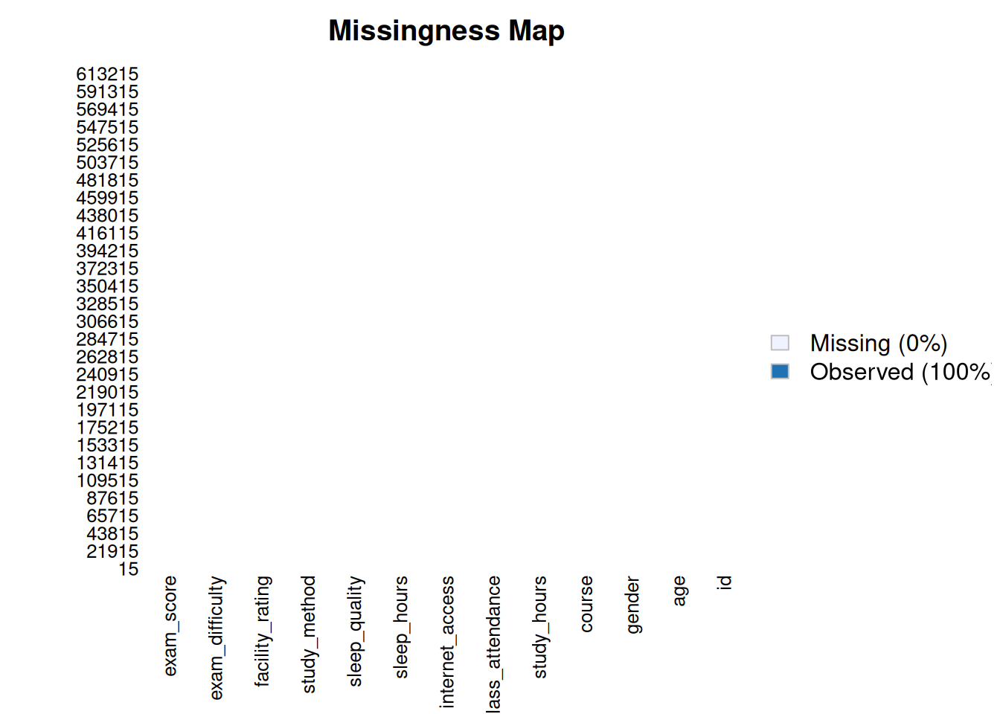

Predicting Student Test Scores
2026-09-16
1 Introducción
Para el desarrollo del análisis trabajaremos con el conjunto de datos Predicting Student Test Scores, un conjunto de datos sintético diseñado para problemas de regresión en el ámbito educativo. Este conjunto contiene información sobre características académicas, conductuales y de acceso a recursos de 630.000 estudiantes, con el objetivo de analizar y predecir el desempeño académico a partir de variables como las horas de estudio, la asistencia a clases, el método de estudio empleado y el acceso a recursos como internet.
A partir de este conjunto de datos, el presente proyecto busca responder la siguiente pregunta de investigación:
¿Cuáles son los factores académicos, conductuales y de acceso a recursos que influyen significativamente en el desempeño académico (exam_score) de los estudiantes, y en qué magnitud lo hacen?
1.0.1 Contexto de los datos de student test scores
Las variables del conjunto de datos son:
age: Edad del estudiante.gender: Género del estudiante (female, male, other).study_hours: Número de horas dedicadas al estudio.study_method: Método de estudio empleado (coaching, group study, mixed, online videos, self-study).class_attendance: Porcentaje de asistencia a clases.sleep_hours: Número de horas de sueño.sleep_quality: Calidad del sueño percibida (poor, average, good).course: Programa académico que cursa el estudiante.internet_access: Indica si el estudiante cuenta con acceso a internet (yes, no).facility_rating: Calificación de las instalaciones educativas (low, medium, high).exam_difficulty: Dificultad percibida del examen (easy, moderate, hard).exam_score: Calificación obtenida por el estudiante en el examen, en una escala de 0 a 100.
Iniciaremos con un análisis exploratorio de datos (EDA) del conjunto Predicting Student Test Scores, con el propósito de comprender la estructura de los datos, identificar patrones, detectar valores atípicos y analizar las relaciones entre las variables que pueden influir en el desempeño académico de los estudiantes.
Carguemos las librerias y el conjunto de los datos
## ── Attaching core tidyverse packages ──────────────────────── tidyverse 2.0.0 ──
## ✔ dplyr 1.2.1 ✔ readr 2.2.0
## ✔ forcats 1.0.1 ✔ stringr 1.6.0
## ✔ ggplot2 4.0.3 ✔ tibble 3.3.1
## ✔ lubridate 1.9.5 ✔ tidyr 1.3.2
## ✔ purrr 1.2.2
## ── Conflicts ────────────────────────────────────────── tidyverse_conflicts() ──
## ✖ dplyr::filter() masks stats::filter()
## ✖ dplyr::lag() masks stats::lag()
## ℹ Use the conflicted package (<http://conflicted.r-lib.org/>) to force all conflicts to become errors## Loading required package: Rcpp
## ##
## ## Amelia II: Multiple Imputation
## ## (Version 1.8.3, built: 2024-11-07)
## ## Copyright (C) 2005-2026 James Honaker, Gary King and Matthew Blackwell
## ## Refer to http://gking.harvard.edu/amelia/ for more information
## ####
## Attaching package: 'rstatix'
##
## The following object is masked from 'package:stats':
##
## filterVerifiquemos que leímos bien los datos observando las primeras filas:
## id age gender course study_hours class_attendance internet_access
## 1 0 21 female b.sc 7.91 98.8 no
## 2 1 18 other diploma 4.95 94.8 yes
## 3 2 20 female b.sc 4.68 92.6 yes
## 4 3 19 male b.sc 2.00 49.5 yes
## 5 4 23 male bca 7.65 86.9 yes
## sleep_hours sleep_quality study_method facility_rating exam_difficulty
## 1 4.9 average online videos low easy
## 2 4.7 poor self-study medium moderate
## 3 5.8 poor coaching high moderate
## 4 8.3 average group study high moderate
## 5 9.6 good self-study high easy
## exam_score
## 1 78.3
## 2 46.7
## 3 99.0
## 4 63.9
## 5 100.0Con esto podemos confirmar que la base de datos fue cargada correctamente, como prueba de ello observando las primeras 5 filas de información.
## [1] "id" "age" "gender" "course"
## [5] "study_hours" "class_attendance" "internet_access" "sleep_hours"
## [9] "sleep_quality" "study_method" "facility_rating" "exam_difficulty"
## [13] "exam_score"## 'data.frame': 630000 obs. of 13 variables:
## $ id : int 0 1 2 3 4 5 6 7 8 9 ...
## $ age : int 21 18 20 19 23 24 20 22 22 18 ...
## $ gender : chr "female" "other" "female" "male" ...
## $ course : chr "b.sc" "diploma" "b.sc" "b.sc" ...
## $ study_hours : num 7.91 4.95 4.68 2 7.65 5.04 4.28 4.19 1.06 3.44 ...
## $ class_attendance: num 98.8 94.8 92.6 49.5 86.9 85.1 87 44.9 98.3 80.9 ...
## $ internet_access : chr "no" "yes" "yes" "yes" ...
## $ sleep_hours : num 4.9 4.7 5.8 8.3 9.6 9.4 9.1 8.8 5 6.2 ...
## $ sleep_quality : chr "average" "poor" "poor" "average" ...
## $ study_method : chr "online videos" "self-study" "coaching" "group study" ...
## $ facility_rating : chr "low" "medium" "high" "high" ...
## $ exam_difficulty : chr "easy" "moderate" "moderate" "moderate" ...
## $ exam_score : num 78.3 46.7 99 63.9 100 70.1 63.4 76.8 46.7 58.2 ...Identifiquemos si existen valores NA por columna:
## id age gender course study_hours class_attendance internet_access sleep_hours
## 1 0 0 0 0 0 0 0 0
## sleep_quality study_method facility_rating exam_difficulty exam_score
## 1 0 0 0 0 0Comprobamos con las variables cátegoricas.
trainset %>%
select(where(is.character)) %>%
summarise(across(everything(), ~ sum(is.na(.)), .names = "NA_{.col}"))## NA_gender NA_course NA_internet_access NA_sleep_quality NA_study_method
## 1 0 0 0 0 0
## NA_facility_rating NA_exam_difficulty
## 1 0 0
No existe ningun dato faltante en el dataset train.csv.